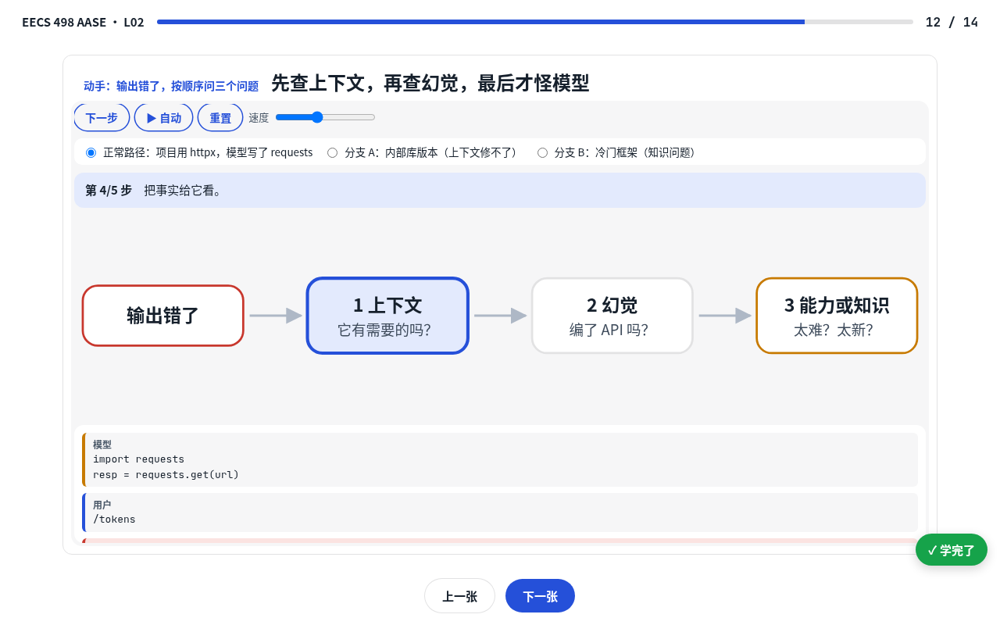

公开课 · 主题
UMich EECS 498-016 · Applied Agentic Software Engineering
2026 秋，密歇根大学，Marcus Darden 主讲。一个编码智能体，用它、拆它、造一个值得留下的。
已学完 0/11 · 进行中 2
2讲已做成学习页
0已学完
2进行中
9讲未开始
课程简介
只写官方资料里有的
4 学分，无考试、无教材，按项目、实验和 demo 评分；课程全程在笔记本上跑，用 Ollama 自己部署小模型（qwen3.5）。出处
三个阶段：Apply（第 1–3 周，L01–L06，用 Aider 做结对程序员，18%）→ Analyze（第 4–7 周，L07–L14，直接调 LLM API 自己写智能体循环、审批层、停止条件和评测，22.5%）→ Create（第 8–15 周，L15–L28，把智能体长成值得留下的助手，49.5%）。出处
核心诊断框架 The Big Three：上下文、模型、提示词（L03）。出处
官方仓库 materials：lectures/ 每讲一个目录（slides.md + PDF + PPTX），labs/ 实验，demos/ 现场演示代码（带 reset 脚本），egm/ 五个可安装的 Skill。出处
课程 8 月 31 日开课，12 月 10 日 Showcase；课表与大纲以官网 syllabus 为准。出处
按讲次 2
一讲一页，按顺序学

Course intro + the AI coding landscape（从 Typist 到 Curator）
14 张卡片 · Curator 现场演示模拟器（含读 diff 后撤销分支）· 6 道小测。待：小测 + 复述。

How LLMs Code (Under the Hood)
14 张卡片 · 诊断三问模拟器（含内部库版本、冷门框架两个分支）· 6 道小测。待：小测 + 复述。
全部讲次 9 讲未开始
还没做成学习页，先看官方原始资料
官方仓库已发布 L01–L11（后续讲次随授课发布）。日期按官方课表推算（周二、周四上课）；L07 起实际讲义题目与大纲有调整，以讲义为准。点一行打开官方 slides.md，同目录还有 PDF 和 PPTX。
L07未开始Inside the Call: Messages, Streams, and Tool Calls
官方讲义 · 大纲原题：LLM APIs: Opening the Client You Were Handed
约 09/22（按课表推算）L08未开始Hackathon 1 Briefing
官方讲义 · 大纲原题：Tool Use, Function Calling, and the Agent Loop；Hackathon 1 在当晚
约 09/24（按课表推算）L10未开始Skills and the Elephant-Goldfish Model
官方讲义 · 大纲原题：Serving a Local Model（EGM 原排在 L16）
约 10/01（按课表推算）L11未开始Guardrails: Errors, Retries and Approval Gates
官方讲义 · 大纲原题：Edit Formats, Measured Against Your Own Parser
约 10/06（按课表推算）EGM 五个 Skill 流水线
/peanuts → /elephant → /goldfish → /egm-implement → /mean-review
方法出自 Dave Rensin 的 Elephant-Goldfish Model；每一步都由人手动发起下一步，/peanuts 只在大型遗留代码库时才用。
1/peanuts · 遗留大代码库自底向上建 README 树
每一层都有人工审查关口；写出每个目录的 README.md 和 PEANUTS.md。仅用于大型遗留代码库。
2/elephant · 不写代码的设计对话 → 四节式设计文档
写出 docs/designs/<slug>.md 和 ELEPHANT.md
3/goldfish · 三个全新会话并行评审，改到只剩小问题
写出 GOLDFISH.md 和评审报告
4/egm-implement · 只建文档列出的文件，现实和文档不符就停
写出代码和 IMPLEMENT.md
5/mean-review · 尽可能严苛地审 diff，四项扫描由脚本强制
写出 MEAN-REVIEW.md，每轮一张问题清单
总览egm/skills 目录 + egm/README.md（先读这个）
另有 walkthroughs/ 逐个拆解，anatomy-of-a-skill.md 讲一个 Skill 怎么搭起来。对应 L10。
实验
官方 labs/ 目录
Lab00Setup Lab
Lab01How Aider works
推荐来源
从这里发现的这门课（第三方解读，以官方资料为准）
L01 本课概念
王玮的学习库 · 每篇都是可翻页、可动手、带小测的学习页由 build.mjs 从 data/ 生成